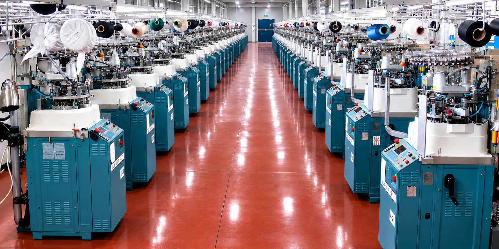

Üretim
Planlı, kontrollü ve kalite odaklı üretim süreci
DUMANLAR A.Ş.; sipariş anından teslimata kadar her aşamayı takip eden, üretim gücünü kalite ve müşteri memnuniyetiyle birleştiren kurumsal üretim yaklaşımıyla çalışır.
Üretim Akışı
Her sipariş aynı disiplinle ele alınır
Ürün tipi, hedef satış kanalı, adet, hammadde, renk, desen, ambalaj ve teslimat beklentisi netleştiğinde üretim planı kontrollü şekilde oluşturulur.
Talep Analizi
Ürün grubu, adet, hedef pazar, kalite beklentisi, ambalaj ve teslimat bilgileri değerlendirilir.
Numune Hazırlığı
İplik, renk, desen, beden, etiket ve ambalaj detayları üretim öncesi netleştirilir.
Üretim Planlama
Makine parkı, üretim takvimi ve sipariş önceliği planlı bir üretim akışına dönüştürülür.
Üretim Takibi
Sipariş üretim boyunca takip edilir; ürün grubuna göre ara kontroller yapılır.
Kalite Kontrol
Ölçü, görünüm, dikiş, esneklik, ambalaj ve genel ürün standardı kontrol edilir.
Paketleme & Sevkiyat
Etiket, paket, barkod, koli ve teslimat düzeni satış kanalına uygun hazırlanır.

Üretim Gücü
Modern tesislerde ölçekli ve takip edilebilir üretim
Üretim sürecinde amaç yalnızca ürünü tamamlamak değil; siparişin başından sonuna kadar takip edilebilir, tekrar edilebilir ve satış kanalına uygun bir üretim standardı oluşturmaktır.
Bu yaklaşım; toptan satış, özel marka, mağaza, market ve dış pazar taleplerinde güvenilir bir iş akışı sağlar.
Makine parkıPlanlamaNumuneKaliteSevkiyat
Kalite Yaklaşımı
Kalite yalnızca son kontrolde değil, sürecin tamamındadır
Hammadde seçiminden paketleme aşamasına kadar ürünün her adımı kalite beklentisiyle birlikte değerlendirilir.
Hammadde ve ürün uygunluğu
İplik, ürün grubu ve kullanım beklentisi sipariş öncesinde birlikte değerlendirilir.
Ambalaj ve teslimat standardı
Ürün satış kanalına uygun etiket, paket, barkod ve koli düzeniyle sevkiyata hazırlanır.
Üretim Talebi
Siparişinizi planlı bir üretim sürecine dönüştürelim.
Ürün grubu, adet, hedef satış kanalı ve ambalaj beklentinizi paylaşın; üretim planını birlikte netleştirelim.